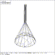

So far, this example has concentrated on describing the basic shapes involved in making the Tin Woodsman, without concern for establishing a proper hierarchical structure. To illustrate this point, the various solids will be grouped by purpose and composition. First, a region will be constructed to contain the torso, and the color of ``cadet blue'' will be assigned:
mged> r torso.r u s.1
Defaulting item number to 1001
Creating region id=1000, air=0, los=100, GIFTmaterial=1
mged> mater torso.r
Material =
Material? (CR to skip) plastic
Param =
Parameter string? (CR to skip) [RETURN]
Color = (No color specified)
Color R G B (0..255)? (CR to skip) 95 159 159
Inherit = 0: lower nodes (towards leaves) override
Inheritance (0|1)? (CR to skip) [RETURN]
mged>
Second, a region will be constructed to contain the collar, which will be colored red:
mged> r collar.r u t.1
Defaulting item number to 1003
Creating region id=1002, air=0, los=100, GIFTmaterial=1
mged> mater collar.r
Material =
Material? (CR to skip) plastic
Param =
Parameter string? (CR to skip) [RETURN]
Color = (No color specified)
Color R G B (0..255)? (CR to skip) 255 127 0
Inherit = 0: lower nodes (towards leaves) override
Inheritance (0|1)? (CR to skip) [RETURN]
mged>
Third, a region will be constructed to contain all the limbs, and a flesh color will be assigned. Even though none of the limbs touch each other, note how they are combined with the UNION operation, to create a single object of uniform composition and color.
mged> r limbs.r u e.2 u e.3 u e.4 u e.5 u e.6 u e.7 u e.8 u e.9
Defaulting item number to 1001
Creating region id=1000, air=0, los=100, GIFTmaterial=1
mged> mater limbs.r
Material =
Material? (CR to skip) plastic
Param =
Parameter string? (CR to skip) [RETURN]
Color = 0 0 0
Color R G B (0..255)? (CR to skip) 255 200 160
Inherit = 0: lower nodes (towards leaves) override
Inheritance (0|1)? (CR to skip) [RETURN]
mged>
Next, the funnel needs to be placed in a region. For the sake of simplicity, the funnel will be solid, rather than having a hollow center. Note that the interior of the funnel overlaps with the top of the Woodsman's head. The funnel can be made ``form fitting'' by subtracting out the overlap zone:
mged> r funnel.r u c.1 - e.1 u c.2 - e.1
Defaulting item number to 1004
Creating region id=1003, air=0, los=100, GIFTmaterial=1
mged> mater funnel.r
Material =
Material? (CR to skip) plastic
Param =
Parameter string? (CR to skip) sh=100
Color = (No color specified)
Color R G B (0..255)? (CR to skip) 35 107 142
Inherit = 0: lower nodes (towards leaves) override
Inheritance (0|1)? (CR to skip)
mged> l funnel.r
funnel.r (len 4) REGION id=1003 (air=0, los=100, GIFTmater=1) -
Material 'plastic' 'sh=100'
Color 35 107 142
u c.1
- e.1
u c.2
- e.1
mged>
 Figure (wm-hat-E): Evaluation of Funnel Hat Region
Note how the boolean expression was written. The concept that we need to express here is the combination of all the funnel parts, minus the portion of the head that overlaps with the inside of the funnel. The natural way to write this is (c.1 union c.2) - e.1 but note that there are no grouping operations permitted in the r command. Furthermore, for historic reasons, union operations bind more loosely than intersection and subtraction, ie, there are implied groups between union operations. Thus, the expression above needs to be rewritten as the the formula: (c.1 - e.1) union (c.2 - e.1) which with the binding precedence can be expressed as: c.1 - e.1 union c.2 - e.1 which is what was entered in the sequence above. To see the effect that this command had on the shape of ``funnel.r'', run these commands, the effect of which is shown in Figure (wm-hat-E) :
mged> Z
mged> E funnel.r
vectorized in 1 sec
mged>
These regions should be grouped together into a group, for convenience in referencing. This can be done with these commands:
mged> g man.g collar.r funnel.r limbs.r torso.r
mged> Z
mged> e man.g
vectorized in 1 sec
mged>
The grouping g command combined the regions, the Zap command Z cleared the screen, and the edit e man.g command drew the whole object. As an exercise, run the database structure printing command tree man.g to obtain a simple depiction of the tree structure that has been created. For the final step of this example, the model will be ray-traced. Run the command:
mged> rt -s128
rt -s50 -M -s128 woodsman.g man.g
db title: A Tin Woodsman
Buffering single scanlines
initial dynamic memory use=35152.
Interpreting command stream in old format
GETTREE: 0.01 CPU secs in 1 elapsed secs (1%)
...................Frame 0...................
PREP: 0.01 CPU secs in 0.01 elapsed secs (100%)
shooting at 13 solids in 4 regions
model X(-2,2), Y(-6,7), Z(-2,2)
Beam radius=0.078125 mm, divergance=0 mm/1mm
SHOT: 3.73 CPU secs in 6 elapsed secs (62.1667%)
Additional dynamic memory used=29728. bytes
3515 solid/ray intersections: 1005 hits + 2510 miss
pruned 28.6%: 13647 model RPP, 8197 dups, 10740 RPP
Frame 0: 16384 pixels in 3.73 sec = 4392.49 pixels/sec
Frame 0: 16384 rays in 3.73 sec = 4392.49 rays/sec (RTFM)
Press RETURN to reattach
[RETURN]
mged>
{kind=link}